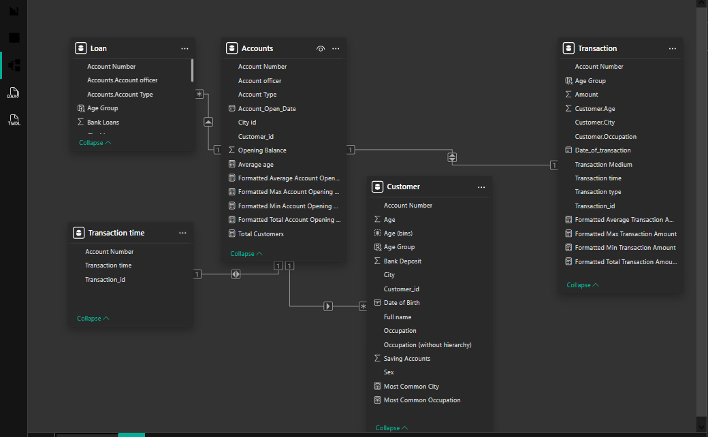
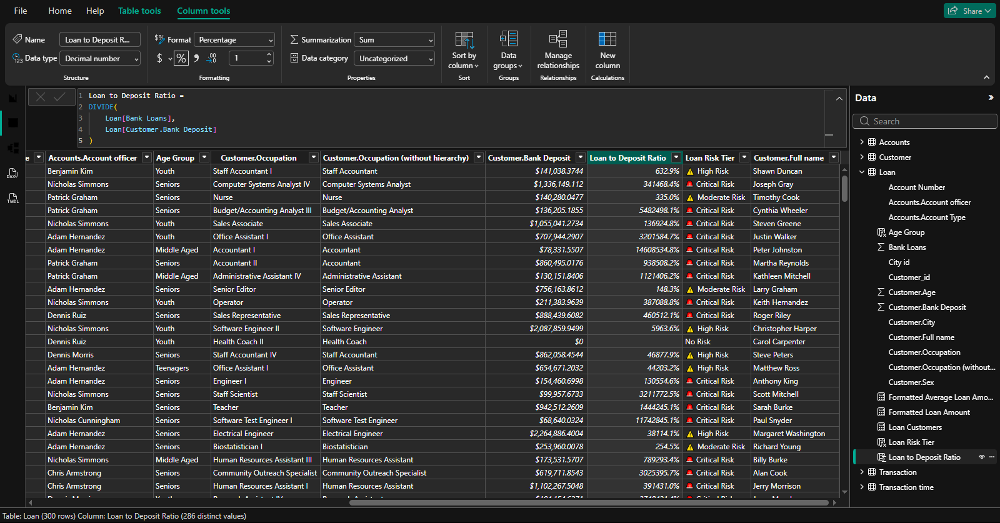

The Loan Analytics Dashboard highlighting total loan amounts, top borrowing demographics, and automated risk categorization.
(Use arrow keys or buttons to navigate • Click any image to view full size)
Uncovering customer demographics, loan default risks, and transaction behaviors for 2,939 bank customers.
During the Data Science Nigeria (DSN) "AI Classes In Every City" hackathon, the challenge was to uncover actionable patterns within a banking dataset of nearly 3,000 customers. Stakeholders needed to understand loan default risks, customer demographics, and operational bottlenecks (such as peak transaction times) to drive strategic marketing and lending decisions.
I imported the raw Excel dataset into Power BI, overcoming data modeling challenges (like ambiguous relationships and categorical IDs) by flattening the model using Merged Queries in Power Query. I then engineered advanced DAX measures to dynamically format regional currency (Naira ₦) and automatically categorize customers into Loan Risk Tiers before building a 4-page interactive dashboard.
The Loan Analytics Dashboard highlighting total loan amounts, top borrowing demographics, and automated risk categorization.
(Use arrow keys or buttons to navigate • Click any image to view full size)
Hackathon Excel Dataset → Power Query (Data Cleaning & Merged Queries for Relationship Resolution) → Power BI (Star Schema Data Modeling) → Advanced DAX Engineering → Interactive Dashboards.
Excel → Power Query → Star Schema → DAX → Power BI Dashboards
Key technical components of the banking analytics project:

Data Modeling & Relationship Resolution

DAX Measure Engineering
Here's a sample of the advanced DAX measures engineered to automate risk categorization and dynamic currency formatting:
// Automated Loan Risk Tiering based on Loan-to-Deposit Ratio
Loan Risk Tier = SWITCH(
TRUE(),
[Loan to Deposit Ratio] > 1000, "🚨 Critical Risk",
[Loan to Deposit Ratio] > 5, "⚠️ High Risk",
[Loan to Deposit Ratio] > 1, "⚠️ Moderate Risk",
[Loan to Deposit Ratio] > 0, "✅ Low Risk",
"No Risk"
)
// Dynamic Loan Display with Naira Currency Format
VAR amt = SUM(Loan[Bank Loans])
RETURN
SWITCH(
TRUE(),
amt >= 1_000_000_000_000, FORMAT(amt / 1_000_000_000_000, "₦#,0.00") & "T",
amt >= 1_000_000_000, FORMAT(amt / 1_000_000_000, "₦#,0.00") & "B",
amt >= 1_000_000, FORMAT(amt / 1_000_000, "₦#,0.00") & "M",
amt >= 1_000, FORMAT(amt / 1_000, "₦#,0.00") & "K",
FORMAT(amt, "₦#,0")
)
Here's what the hackathon analysis revealed:
Total Customers Profiled
Domiciliary Balances
Peak Transaction Hours
Dominant Age Demographic